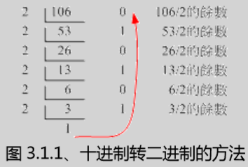

chap0计算机概论
硬件
主流主板通过南北桥链接各个设备，北桥链接速度较快的cpu，主存储器，显示适配器，南桥连接速度较慢的网络适配器，usb，硬盘
amd主板的架构比较特殊，将主存储器的控制组件整合在cpu中，其主存储器与cpu直接沟通而不通过北桥，进而加速两者之间的传输速度
cpu的运算效能不仅取决于频率，还取决的cpu的微指令集
数据通过总线传输，一般的主板芯片有分为北桥和南桥
北桥的总线成为系统总线，是内存传输的主要信道，速度较快
前端总线速度(Front Side Bus, FSB)：即北桥所支持的频率
总线宽度：北桥每次传送的位数（常见的为32/64位(bits)）
字组大小(word size)：CPU每次能够处理的数据量。（常见的为32/64位）
我们所称的计算机32/64位主要是依据这个CPU解析的字组大小而来的
字组大小与总线宽度是可以不同的
总线带宽：北桥每秒钟可传输的最大数据量
南桥的总线为输入呼出（I/O）总线，主要联系硬盘、USB、网络卡等接口。
CPU等级
i586：在Inter Pentium MMX与AMD K6年代的CPU
i686：Inter Celeron 与 AMD Athlon(K7)年代之后的32位CPU
x86_64：目前的64位CPU
另外还有i386等CPU等级
目前有很多程序对CPU做优化设计，这种设计有向下兼容的能力。如i586的计算机能够运行i386的软件，而i386的计算机不能运行i586的软件
内存
前后脚位长度不同，防止用户主存储器安插错误
动态随机存取内存(Dynamic Random Access Memory, DRAM)：也称“挥发性内存”，是个人计算机的主存储器的主要组件，只有在通电时才能记录与使用，断电后数据就消失
较为广泛使用的有SDRAM和DDR SDRAM两种
两者脚位与工作电压不同
DDR即双倍数据传送速度(Double Data Rate)，一工作周次中进行两次数据传输，因此传输频率方面更优
DDR又有DDR, DDR2, DDR3等多种型号，其挑选与芯片组有关，也就是说，主板、CPU、内存的挑选要考虑他们的相关性
性能参数：频率、带宽、型号、容量
容量足够大，系统就不用常常释放一些内存内部的数据
双通道设计
总线宽度是固定的，启用双信道可以将两个主存储器汇整在一起，加大主存储器的数据宽度
必须安装两支或四支主存储器，由于数据是同步写入/读出同一队主存储器中，两者的容量、型号最好相同，以提高整体带宽
有些主板上四个插槽有两种不同的颜色，插在相同颜色的两插槽的主存储器为一对
CPU与主存储器的频率关系：两者不必相同，但是两者外频一致较佳
DRAM和SRAM
第二层快取(L2 cache)：CPU内部整合的存储器，用于某些很常用的程序或数据，使资料读取无需通过北桥，大大提高效能
L2内存的速度必须与CPU频率相同，DRAM是无法达到的，因此采用晶体管数更多但价格较高、不易做成大容量的SRAM（Static Random Access Memory静态随机存取内存)
只读存储器(ROM)
主板上设备的启动机器参数是被记录到一个名为CMOS的芯片上，靠着额外电源（即主板上的电池）来发挥记录功能
BIOS(Basic Input Output System)是一套开机首先读取的小程序，一般记录在只读内存(ROM)中
韧体是一些硬件内部重要的程序，一般写在ROM中，BIOS就是韧体的一种
现在的BIOS通常是写入类似闪存(flash)或EEPROM中，方便进行更新
显示适配器(Video Graphics Array, VGA)
内存：每个图像的显示的颜色会占用内存，将影响屏幕分辨率和颜色深度
3D加速芯片(GPU)：显示适配器上专门用于3D运算的芯片
主要也是通过北桥芯片与CPU、主存储器沟通
插槽发展：PCI → AGP → PCI-Express
分辨率越高、屏幕更新率越大，所需的内存越高
硬盘与储存设备
一般桌面计算机采用3.5寸的硬盘，笔记本采用2.5寸的硬盘
接口类型：IDE、SATA、SCSI（常用于工作站等级以上、运转速度快，比较不耗费CPU资源）
缓冲存储器：将常使用的数据快取起来，以加速系统读取效能，目前主流产品达到16MB左右
转速：转速越快存取效能越高，主流桌面计算机的为7200转，笔记本5400转，也有10000转的高转速硬盘
抖动或者有脏污在磁头和磁盘盘之间会造成数据的损毁或硬盘的损毁，所以尽量少搬动主机，更别去拍它
正常关机能使机械手臂归回原位，直接断电关机有损硬盘
PCI适配卡
网卡、声卡、特殊功能卡等
现在许多设备组件如声卡、网卡、USB控制卡、显示适配器、磁盘阵列卡等等都整合到了主板上
主板
主板上有各种插槽和芯片组
芯片组（尤其是北桥）也可能散发出高热量，所以需要进行散热，常见措施有安装小风扇、散热片或者热导管（黄铜色的散热片，连接着数根圆形导管）
I/O地址与IRQ中断信道：每个装置都有自己的I/O地址，方便系统的调用；而IRQ则为各装置与CPU沟通的专门通道
CMOS与BIOS：CMOS主要用于记录主板上的参数，需要外接电源（多为电池）；BIOS写入到flash或EEPROM中的程序，开机时执行，以加载CMOS中的参数，并尝试呼叫储存装置中的开机程序进一步进入系统，BIOS也可以修改CMOS中的数据
连接接口设备的接口（主要在主机机壳后方）：
PS/2：常见的键鼠接口，渐渐被USB取代
USB：流行借口，即插即用
声音输出、输入与麦克风：连接声卡（音效芯片）
RJ-45网络头：连接网络卡（网络芯片）
电源供应器
能源转换率：电源供应器本身会消耗一部分电力，能源转换率=主板用电量/电源供应器耗电量
接口：主要有20pin与24pin两种规格
系统不稳定的常见原因：
cpu超频
电源供电器不稳
内存超负荷
系统过热
数据表示方式
二进制转十进制：1101010 = 1*2^6 + 1*2^5 + 0*2^4 + 1*2^3 + 0*2^2 + 1*2^1 + 0*2^0
十进制转二进制：
文字编码系统：将二进制转化为字符
ASCII：共有256种字符，英文、符号、数字
big5：中文最常用，但也只支持一万三千多个中文
Unicode编码系统（UTF8或万国码）：支持各国各种字符
软件程序运作
机器程序和编译程序
操作系统(Operating System, OS)
操作系统核心(Kernel)：让CPU可以开始判断逻辑与运算数值、让主存储器可以开始加载/读出数据与程序代码、让硬盘可以被存取、让网络卡可以开始传输数据、让所有周边可以开始运转等等功能
核心程序所放置的内存当中的区块是受保护的，并且开机后就一直常驻在内存中
系统呼叫(System Call)
操作系统会提供一组开发接口给工程师开发软件
既可以保护核心，又可以方便设计师开发软件
软件、硬件与核心关系较大；但软件与硬件间关系不大
核心层直接参考硬件规格来写，如32位/64位的CPU及对应的系统版本
操作系统只是在管理整个硬件资源
应用程序的开发都是参考操作系统提供的开发接口
核心功能
系统呼叫接口(System call interface)
程序管理(Process control)
内存管理(Memory management)
文件系统管理(Filesystem management)
数据的输入输出
不同文件格式的支持
文件系统与硬盘的文件格式（如NTFS）
……
装置的驱动(Device drivers)
操作系统与驱动程序
操作系统必须要能驱动硬件，应用程序才能使用该硬件功能
一般操作系统会提供开发接口，让开发商制作他们的驱动程序
使用新硬件功能，必须安装厂商提供的驱动程序
驱动程序由厂商提供，与操作系统的开发者无关
同样的硬件在不同的操作系统有不同的驱动程序
应用程序